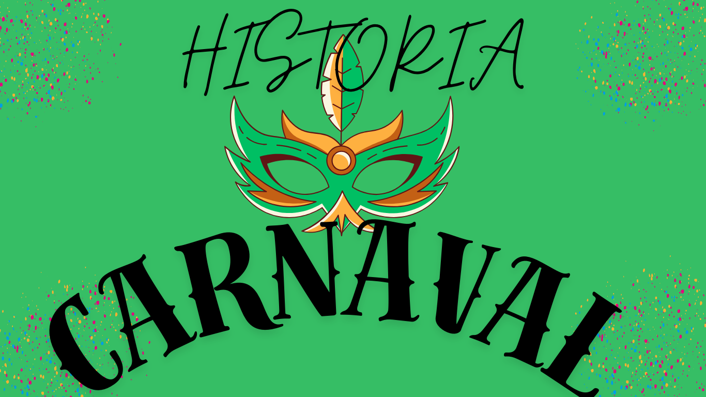

A historia

O Carnaval é uma das festas mais populares e tradicionais do Brasil e do mundo, com raízes que remontam a antigas celebrações europeias, mas que, ao longo do tempo, assumiu uma forma própria, especialmente no Brasil. A origem do Carnaval pode ser dividida em algumas
como chegou ao brasil
O Carnaval no Brasil tem raízes profundas na história do país, com influências de várias culturas. A origem do Carnaval brasileiro está ligada principalmente às festas de origem europeia, que foram adaptadas ao longo do tempo pelas tradições africanas e indígenas. Aqui estão alguns pontos-chave sobre como o Carnaval chegou ao Brasil: 1. Influência Europeia: O Carnaval tem suas origens em festividades da Europa medieval, especialmente nas celebrações pré-quaresmais. Essas festas eram marcadas por danças, músicas e disfarces, em que as pessoas podiam brincar e se divertir antes do período de abstinência religiosa da Quaresma. As tradições de Carnaval europeias, como os bailes de máscaras e as ruas animadas, foram trazidas para o Brasil pelos colonizadores portugueses no século XVI. 2. Chegada ao Brasil e Influência Africana: Quando os portugueses chegaram ao Brasil, no século XVI, começaram a incorporar as festividades carnavalescas nas suas celebrações. Além disso, a presença de africanos trazidos como escravizados também influenciou as festas, que passaram a incorporar danças, músicas e ritmos africanos, como o samba, que se tornaria a principal expressão musical do Carnaval brasileiro. 3. Festas de Momo e Aforamento dos Ritmos Locais: Com o tempo, as festas foram se tornando cada vez mais populares no Brasil, especialmente nas grandes cidades como Rio de Janeiro, Salvador e Recife. No Rio de Janeiro, as festas de Carnaval começaram a ganhar destaque no século XIX, com os chamados "cordões" (grupos de foliões que desfilavam pelas ruas) e as "máscaras". Em Salvador, o Carnaval começou a tomar a forma que conhecemos hoje com os blocos de rua, que são uma das maiores atrações da cidade. 4. Surgimento do Samba e Consolidação do Carnaval: No início do século XX, o samba surgiu como um ritmo e dança característicos do Carnaval brasileiro, especialmente no Rio de Janeiro. Na década de 1920, o samba ganhou ainda mais popularidade, com o surgimento das primeiras escolas de samba, que começaram a organizar desfiles de grande porte, marcando o início do que seria o desfile de escolas de samba moderno. 5. O Carnaval Hoje: Hoje, o Carnaval brasileiro é um dos maiores e mais famosos do mundo, com desfiles de escolas de samba no Rio de Janeiro, blocos de rua em Salvador e Recife, além de festas regionais em todo o Brasil. Cada região tem suas próprias tradições e influências, mas a essência do Carnaval – a festa, a dança, a música e a liberdade – permanece a mesma. O Carnaval, portanto, é uma fusão de várias influências culturais e históricas, que foram se moldando ao longo dos séculos para se tornar essa grande celebração que é hoje.
